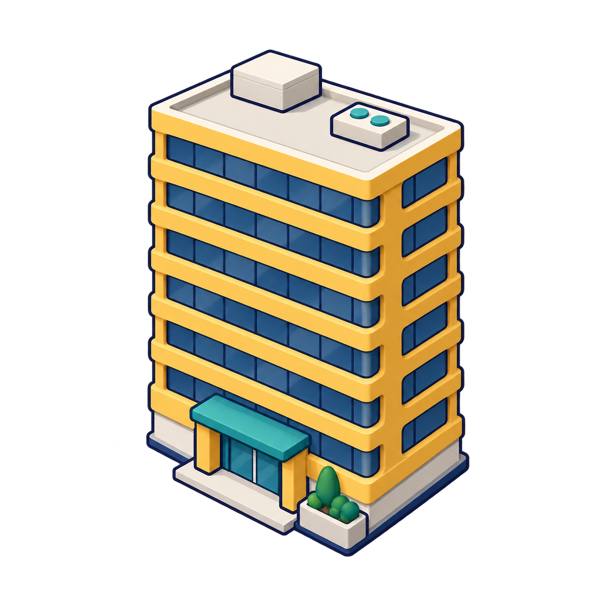
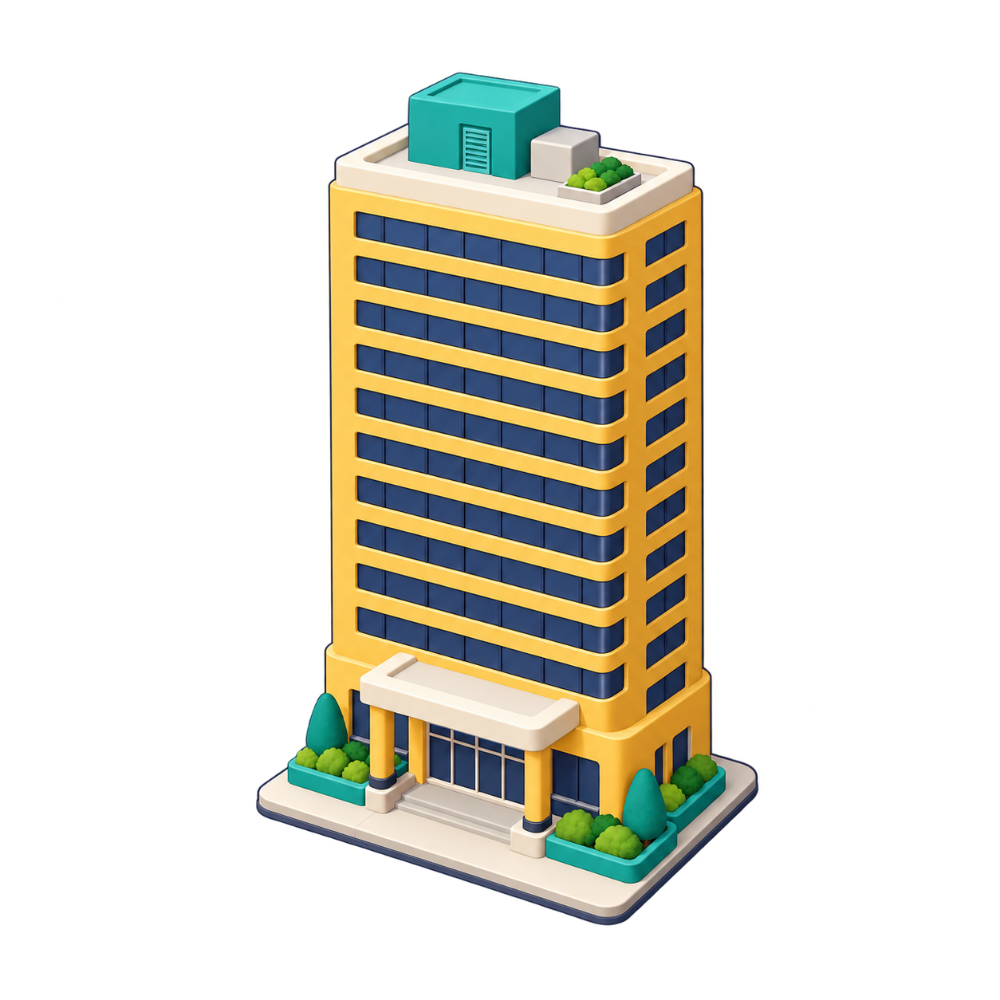
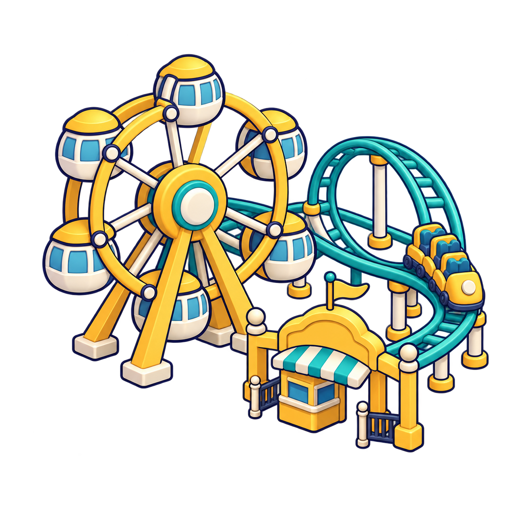
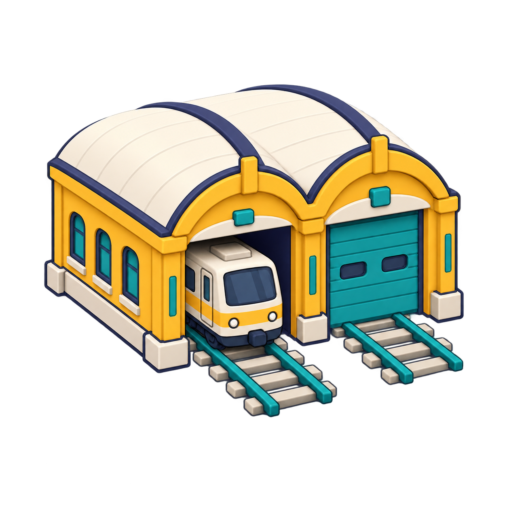
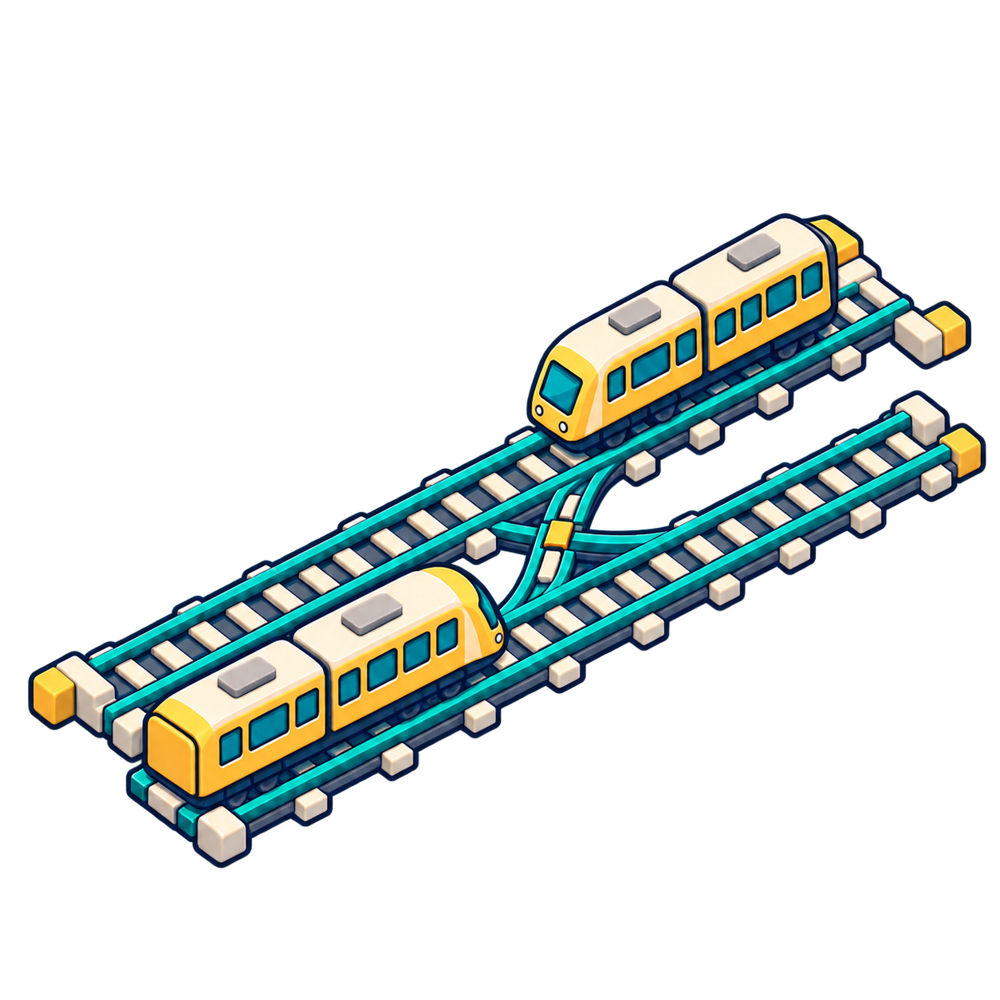
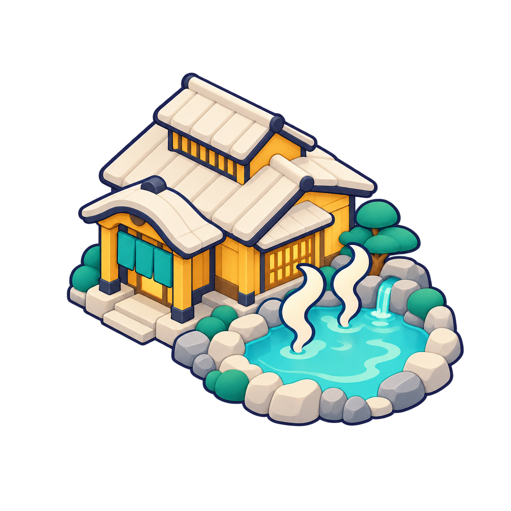
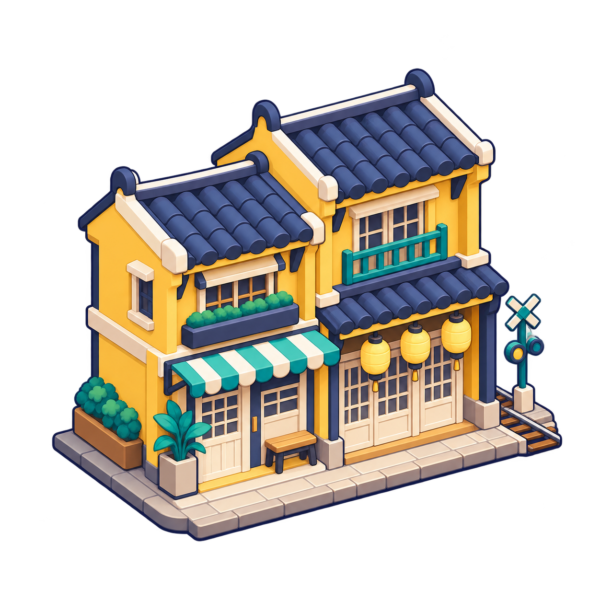

暖黃住宅
住宅建造卡／建物面板
建議 64 點以上
building-house
四種底色、小尺寸、模糊與灰階
面板淺色
面板深色
地圖淺色
地圖深色
建物、鐵路營運、旅客、天氣與觀光，共 24 張透明 PNG。可依用途搜尋，切換深淺底色並展開尺寸預覽。
候選原稿，尚未接入 App。用途與選用說明 · 完整生成紀錄 · 前一批扁平素材
住宅建造卡／建物面板
建議 64 點以上
building-house
商店建造卡／租金面板
建議 64 點以上
building-shop

辦公樓建造卡／就業面板
建議 64 點以上
building-office
百貨建造卡／子公司面板
建議 64 點以上
building-department-store

飯店建造卡／住宿面板
建議 64 點以上
building-hotel

遊樂園建造卡／觀光面板
建議 120 點以上
building-amusement-park
遊艇港建造卡／水岸觀光
建議 120 點以上
building-marina
碼頭建造卡／水岸建設
建議 120 點以上
building-wharf

機廠說明／車輛保養面板
建議 64 點以上
ops-depot
機廠出入庫教學／營運說明
建議 64 點以上
ops-dispatch

複線／待避線教學
建議 120 點以上
ops-double-track
保養面板／機廠教學
建議 64 點以上
ops-maintenance
月台人潮／車門擁擠說明
建議 120 點以上
passenger-queue
旅程追蹤／轉乘說明
建議 120 點以上
passenger-interchange
無障礙車站／旅客服務說明
建議 120 點以上
passenger-accessibility
需求教學／居民與就業說明
建議 64 點以上
passenger-commute
天氣預報／晴天說明
建議 64 點以上
weather-clear
天氣預報／雨天需求
建議 64 點以上
weather-rain
颱風停駛提醒／天氣教學
建議 64 點以上
weather-typhoon
天氣預報／雷陣雨說明
建議 64 點以上
weather-thunderstorm
山岳景點／季節需求說明
建議 64 點以上
tourism-mountain

溫泉景點／冬季需求說明
建議 64 點以上
tourism-hot-spring

城鎮景點／老街觀光說明
建議 120 點以上
tourism-old-street
景點名產店／投資效果面板
建議 64 點以上
tourism-souvenir